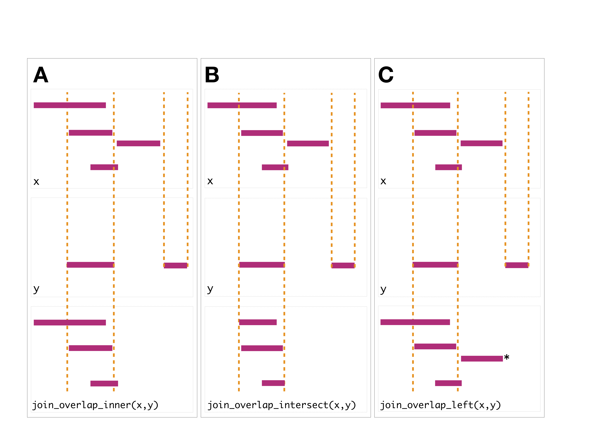
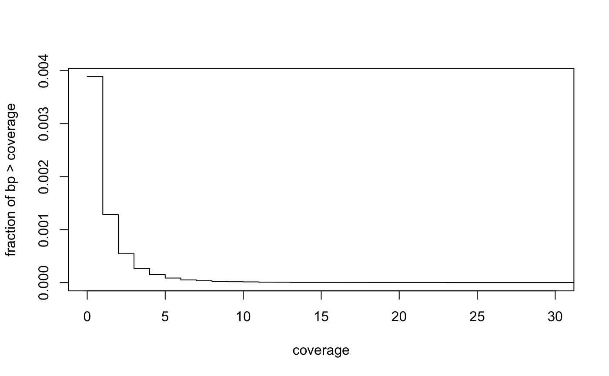

Using plyranges and GenomicRanges to perform common genomic data wrangling tasks
Stuart Lee and Michael Lawrence
2018-11-27
common-tasks.RmdIntroduction
This tutorial will show you how to think about and perform common genomic data wrangling tasks using the using the plyranges and GenomicRanges Bioconductor packages. These packages represent genomic data using the GRanges data structure, which provides a powerful abstraction for working with measurements or annotations along genomic regions. In this tutorial you will use GRanges object to construct workflows to
- read data from common formats like BED
- find overlaps between different sets of genomic regions
- compute coverage and related summaries
Who is this tutorial is for?
If you are an R beginner or new to the Bioconductor ecosystem, this tutorial provides a comprehensive overview of one of the most important data structures in Bioconductor, GRanges. We show you how to think of this data structure as a special kind of table and perform all kinds of operations on it.
If you are familiar with the tidyverse suite of packages, then the operations and workflows we will develop will look somewhat familiar to you. However, due to the complexity of genomics data, plyranges develops a new grammar based on the tidyverse to meet the needs of the computational biologist.
We assume you know what a data.frame is and have some knowledge of vector types in R.
The examples and and exercises are based on the HelloRanges package tutorial. If you are familiar with bedtools, this is an excellent resource for learning how similar operations are performed with Bioconductor packages.
Setup
You will need R (version 3.5 or greater) with the following packages installed:
If you do not have these packages you can install them as follows:
# -> Bioconductor packages are installed with this package
install.packages("BiocManager")
# then use the install function from BiocManager
BiocManager::install(c("GenomicRanges", "plyranges", "HelloRangesData"))Introducing GRanges
The GRanges is a fundamental data structure used in the Bioconductor ecosystem. It is very similar to the base R data.frame but with appropriate semantics for a genomics experiment: it has fixed columns for the chromosome, start and end coordinates, and the strand, along with an arbitrary set of additional columns, consisting of measurements or metadata specific to the data type or experiment.

An illustration of a GRanges data object for a single sample from an RNA-seq experiment. The core components of the object include a seqnames column (representing the chromosome), a ranges column which consists of start and end coordinates for a genomic region, and a strand identifier (either positive, negative, or unstranded). Metadata are included as columns to the right of the dotted line as annotations (gene-id) or range level covariates (score).
GRanges balances flexibility with formal constraints, so that it is applicable to virtually any genomic workflow, while also being semantically rich enough to support high-level operations on genomic ranges.
We can create a GRanges from an ordinary data.frame with plyranges using the as_granges() function:
library(plyranges, quietly = TRUE)
genes <- data.frame(seqnames = "VI",
start = c(3322, 3030, 1437, 5066, 6426, 836),
end = c(3846, 3338, 2615, 5521, 7565, 1363),
strand = c("-", "-", "-", "+", "+", "+"),
gene_id=c("YFL064C", "YFL065C", "YFL066C",
"YFL063W", "YFL062W", "YFL067W"),
gc = runif(6),
score = rbinom(6, size = 3, p = 0.1),
stringsAsFactors = FALSE)
genes <- as_granges(genes)
genes## GRanges object with 6 ranges and 3 metadata columns:
## seqnames ranges strand | gene_id gc score
## <Rle> <IRanges> <Rle> | <character> <numeric> <integer>
## [1] VI 3322-3846 - | YFL064C 0.406736710341647 0
## [2] VI 3030-3338 - | YFL065C 0.449663328705356 1
## [3] VI 1437-2615 - | YFL066C 0.868391741998494 0
## [4] VI 5066-5521 + | YFL063W 0.935484018875286 0
## [5] VI 6426-7565 + | YFL062W 0.896344820735976 0
## [6] VI 836-1363 + | YFL067W 0.765752661740407 0
## -------
## seqinfo: 1 sequence from an unspecified genome; no seqlengthsYou might notice a few differences between how the genes GRanges object is printed compared to an ordinary data.frame or tibble.
The measurements/annotation columns like gene_id, gc and score are placed on the right hand side of the “|”. These are referred to as metadata columns; they are not strictly required to construct a GRanges object but are useful for providing biological context.
The required part of a GRanges object are left of the “|” character. These are the seqnames column, the ranges (start, end, width) column, and the strand column.
You may have also noticed that underneath each column name is the type of that column. The metadata columnns are of some usual base R types like character, numeric, and integer but the core columns may be unfamilar. The seqnames and strand column are (factor) Rle columns. Rle stands for run length encoding, and refers to how a column is stored. For now, there is no harm in thinking about these as ordinary factors.
The ranges column is an IRanges which really consists of three columns: the start, end and width coordinates of the range. This becomes apparent if you look back to our original data.frame - the start and end columns from there are just the start and end intervals of the ranges column.
Do not be concerned if this a bit confusing for now, once we start playing with our GRanges object, everything will become clearer.
GRanges transformation and import
Once you have obtained data from an experiement or a public repository, you often want to compute summaries, create new columns, modify the genomic regions or just rearrange the data. Here you will learn how to achieve these tasks using the plyranges:
- Modify, subset, and aggregate genomic data with the
mutate(),filter(), andsummarise(). - Modify genomic regions with the
mutate()… - And while fixing the start/end/center coordinates with the
anchor_*family of functions. - Merge all overlapping and adjacent genomic regions with
reduce_ranges(). - Merge the end points of all genomic regions with
disjoin_ranges(). - Sort genomic ranges with
arrange().
Any of the above operations can be performed on subsets of the data with group_by().
Getting started
To begin we will test out some of these operations using a GRanges object obtained from a BED file containing annotated exons from RefSeq from the hg19 genome build. To load the file as GRanges we can simply use the read_bed function from plyranges.
exons_bed <- system.file("extdata", "exons.bed", package="HelloRangesData")
# our genome build, requires internet connection
build <- genome_info("hg19")
build## GRanges object with 93 ranges and 0 metadata columns:
## seqnames ranges strand
## <Rle> <IRanges> <Rle>
## chr1 chr1 1-249250621 *
## chr2 chr2 1-243199373 *
## chr3 chr3 1-198022430 *
## chr4 chr4 1-191154276 *
## chr5 chr5 1-180915260 *
## ... ... ... ...
## chrUn_gl000245 chrUn_gl000245 1-36651 *
## chrUn_gl000246 chrUn_gl000246 1-38154 *
## chrUn_gl000247 chrUn_gl000247 1-36422 *
## chrUn_gl000248 chrUn_gl000248 1-39786 *
## chrUn_gl000249 chrUn_gl000249 1-38502 *
## -------
## seqinfo: 93 sequences (1 circular) from hg19 genomeexons <- read_bed(exons_bed,
genome_info = build)
exons## GRanges object with 459752 ranges and 2 metadata columns:
## seqnames ranges strand |
## <Rle> <IRanges> <Rle> |
## [1] chr1 11874-12227 + |
## [2] chr1 12613-12721 + |
## [3] chr1 13221-14409 + |
## [4] chr1 14362-14829 - |
## [5] chr1 14970-15038 - |
## ... ... ... ... .
## [459748] chrY 59338754-59338859 + |
## [459749] chrY 59338754-59338859 + |
## [459750] chrY 59340194-59340278 + |
## [459751] chrY 59342487-59343488 + |
## [459752] chrY 59342487-59343488 + |
## name score
## <character> <numeric>
## [1] NR_046018_exon_0_0_chr1_11874_f 0
## [2] NR_046018_exon_1_0_chr1_12613_f 0
## [3] NR_046018_exon_2_0_chr1_13221_f 0
## [4] NR_024540_exon_0_0_chr1_14362_r 0
## [5] NR_024540_exon_1_0_chr1_14970_r 0
## ... ... ...
## [459748] NM_002186_exon_6_0_chrY_59338754_f 0
## [459749] NM_176786_exon_7_0_chrY_59338754_f 0
## [459750] NM_002186_exon_7_0_chrY_59340194_f 0
## [459751] NM_002186_exon_8_0_chrY_59342487_f 0
## [459752] NM_176786_exon_8_0_chrY_59342487_f 0
## -------
## seqinfo: 93 sequences (1 circular) from hg19 genomeThe genome_info() function automatically propagates the reference annotations from the hg19 reference as a GRanges. This is important for ensuring the integrity of any operations involving modifications to genomic regions, like overlaps or nearest neighbours.
Filter ranges with filter()
We can filter() ranges based on column values being TRUE. This requries passing the ranges, along with one or more logical expressions.
For example, we can restrict exons to those that are on the the X chromosome:
filter(exons, seqnames == "chrX")## GRanges object with 18173 ranges and 2 metadata columns:
## seqnames ranges strand |
## <Rle> <IRanges> <Rle> |
## [1] chrX 192991-193061 + |
## [2] chrX 198061-198351 + |
## [3] chrX 198149-198351 + |
## [4] chrX 200834-200981 + |
## [5] chrX 200834-200981 + |
## ... ... ... ... .
## [18169] chrX 155235748-155235853 + |
## [18170] chrX 155235748-155235853 + |
## [18171] chrX 155237188-155237272 + |
## [18172] chrX 155239481-155240482 + |
## [18173] chrX 155239481-155240482 + |
## name score
## <character> <numeric>
## [1] NR_028057_exon_0_0_chrX_192991_f 0
## [2] NM_018390_exon_0_0_chrX_198061_f 0
## [3] NR_028057_exon_1_0_chrX_198149_f 0
## [4] NM_018390_exon_1_0_chrX_200834_f 0
## [5] NR_028057_exon_2_0_chrX_200834_f 0
## ... ... ...
## [18169] NM_002186_exon_6_0_chrX_155235748_f 0
## [18170] NM_176786_exon_7_0_chrX_155235748_f 0
## [18171] NM_002186_exon_7_0_chrX_155237188_f 0
## [18172] NM_002186_exon_8_0_chrX_155239481_f 0
## [18173] NM_176786_exon_8_0_chrX_155239481_f 0
## -------
## seqinfo: 93 sequences (1 circular) from hg19 genomeMultiple conditions can be composed together within a call to filter by seperating the expressions with a comma. To restrict exons to those that are on the X chromosome AND on the positive strand:
filter(exons, seqnames == "chrX", strand == "+")## GRanges object with 9176 ranges and 2 metadata columns:
## seqnames ranges strand |
## <Rle> <IRanges> <Rle> |
## [1] chrX 192991-193061 + |
## [2] chrX 198061-198351 + |
## [3] chrX 198149-198351 + |
## [4] chrX 200834-200981 + |
## [5] chrX 200834-200981 + |
## ... ... ... ... .
## [9172] chrX 155235748-155235853 + |
## [9173] chrX 155235748-155235853 + |
## [9174] chrX 155237188-155237272 + |
## [9175] chrX 155239481-155240482 + |
## [9176] chrX 155239481-155240482 + |
## name score
## <character> <numeric>
## [1] NR_028057_exon_0_0_chrX_192991_f 0
## [2] NM_018390_exon_0_0_chrX_198061_f 0
## [3] NR_028057_exon_1_0_chrX_198149_f 0
## [4] NM_018390_exon_1_0_chrX_200834_f 0
## [5] NR_028057_exon_2_0_chrX_200834_f 0
## ... ... ...
## [9172] NM_002186_exon_6_0_chrX_155235748_f 0
## [9173] NM_176786_exon_7_0_chrX_155235748_f 0
## [9174] NM_002186_exon_7_0_chrX_155237188_f 0
## [9175] NM_002186_exon_8_0_chrX_155239481_f 0
## [9176] NM_176786_exon_8_0_chrX_155239481_f 0
## -------
## seqinfo: 93 sequences (1 circular) from hg19 genomeThis is equivalent to
filter(exons, seqnames == "chrX" & strand == "+")## GRanges object with 9176 ranges and 2 metadata columns:
## seqnames ranges strand |
## <Rle> <IRanges> <Rle> |
## [1] chrX 192991-193061 + |
## [2] chrX 198061-198351 + |
## [3] chrX 198149-198351 + |
## [4] chrX 200834-200981 + |
## [5] chrX 200834-200981 + |
## ... ... ... ... .
## [9172] chrX 155235748-155235853 + |
## [9173] chrX 155235748-155235853 + |
## [9174] chrX 155237188-155237272 + |
## [9175] chrX 155239481-155240482 + |
## [9176] chrX 155239481-155240482 + |
## name score
## <character> <numeric>
## [1] NR_028057_exon_0_0_chrX_192991_f 0
## [2] NM_018390_exon_0_0_chrX_198061_f 0
## [3] NR_028057_exon_1_0_chrX_198149_f 0
## [4] NM_018390_exon_1_0_chrX_200834_f 0
## [5] NR_028057_exon_2_0_chrX_200834_f 0
## ... ... ...
## [9172] NM_002186_exon_6_0_chrX_155235748_f 0
## [9173] NM_176786_exon_7_0_chrX_155235748_f 0
## [9174] NM_002186_exon_7_0_chrX_155237188_f 0
## [9175] NM_002186_exon_8_0_chrX_155239481_f 0
## [9176] NM_176786_exon_8_0_chrX_155239481_f 0
## -------
## seqinfo: 93 sequences (1 circular) from hg19 genomeBut not the same as filtering exons to those on the X chromosome or positively stranded.
filter(exons, seqnames == "chrX" | strand == "+")## GRanges object with 241162 ranges and 2 metadata columns:
## seqnames ranges strand |
## <Rle> <IRanges> <Rle> |
## [1] chr1 11874-12227 + |
## [2] chr1 12613-12721 + |
## [3] chr1 13221-14409 + |
## [4] chr1 69091-70008 + |
## [5] chr1 323892-324060 + |
## ... ... ... ... .
## [241158] chrY 59338754-59338859 + |
## [241159] chrY 59338754-59338859 + |
## [241160] chrY 59340194-59340278 + |
## [241161] chrY 59342487-59343488 + |
## [241162] chrY 59342487-59343488 + |
## name score
## <character> <numeric>
## [1] NR_046018_exon_0_0_chr1_11874_f 0
## [2] NR_046018_exon_1_0_chr1_12613_f 0
## [3] NR_046018_exon_2_0_chr1_13221_f 0
## [4] NM_001005484_exon_0_0_chr1_69091_f 0
## [5] NR_028322_exon_0_0_chr1_323892_f 0
## ... ... ...
## [241158] NM_002186_exon_6_0_chrY_59338754_f 0
## [241159] NM_176786_exon_7_0_chrY_59338754_f 0
## [241160] NM_002186_exon_7_0_chrY_59340194_f 0
## [241161] NM_002186_exon_8_0_chrY_59342487_f 0
## [241162] NM_176786_exon_8_0_chrY_59342487_f 0
## -------
## seqinfo: 93 sequences (1 circular) from hg19 genomeFor a comprehensive overview of all R’s logical operators see section 5.2.2 of R for Data Science.
Overlap based filtering
We can also restrict ranges by overlaps using filter_by_overlaps(), or exclude non overlapping features using filter_by_non_overlaps().
To see how these work it’ll be useful to load another GRanges object, this time from a BED file containing CpG islands.
cpg_bed <- system.file("extdata", "cpg.bed", package = "HelloRangesData")
cpg <- read_bed(cpg_bed,
genome_info = build)
cpg## GRanges object with 28691 ranges and 1 metadata column:
## seqnames ranges strand | name
## <Rle> <IRanges> <Rle> | <character>
## [1] chr1 28736-29810 * | CpG:_116
## [2] chr1 135125-135563 * | CpG:_30
## [3] chr1 327791-328229 * | CpG:_29
## [4] chr1 437152-438164 * | CpG:_84
## [5] chr1 449274-450544 * | CpG:_99
## ... ... ... ... . ...
## [28687] chrY 27610116-27611088 * | CpG:_76
## [28688] chrY 28555536-28555932 * | CpG:_32
## [28689] chrY 28773316-28773544 * | CpG:_25
## [28690] chrY 59213795-59214183 * | CpG:_36
## [28691] chrY 59349267-59349574 * | CpG:_29
## -------
## seqinfo: 93 sequences (1 circular) from hg19 genomeTo find exons that do not overlap any cpg islands we
filter_by_non_overlaps(exons, cpg)## GRanges object with 414647 ranges and 2 metadata columns:
## seqnames ranges strand |
## <Rle> <IRanges> <Rle> |
## [1] chr1 11874-12227 + |
## [2] chr1 12613-12721 + |
## [3] chr1 13221-14409 + |
## [4] chr1 14362-14829 - |
## [5] chr1 14970-15038 - |
## ... ... ... ... .
## [414643] chrY 59338754-59338859 + |
## [414644] chrY 59338754-59338859 + |
## [414645] chrY 59340194-59340278 + |
## [414646] chrY 59342487-59343488 + |
## [414647] chrY 59342487-59343488 + |
## name score
## <character> <numeric>
## [1] NR_046018_exon_0_0_chr1_11874_f 0
## [2] NR_046018_exon_1_0_chr1_12613_f 0
## [3] NR_046018_exon_2_0_chr1_13221_f 0
## [4] NR_024540_exon_0_0_chr1_14362_r 0
## [5] NR_024540_exon_1_0_chr1_14970_r 0
## ... ... ...
## [414643] NM_002186_exon_6_0_chrY_59338754_f 0
## [414644] NM_176786_exon_7_0_chrY_59338754_f 0
## [414645] NM_002186_exon_7_0_chrY_59340194_f 0
## [414646] NM_002186_exon_8_0_chrY_59342487_f 0
## [414647] NM_176786_exon_8_0_chrY_59342487_f 0
## -------
## seqinfo: 93 sequences (1 circular) from hg19 genomeOr we could find the cpg islands that are overlapped by exons
filter_by_overlaps(cpg, exons)## GRanges object with 18845 ranges and 1 metadata column:
## seqnames ranges strand | name
## <Rle> <IRanges> <Rle> | <character>
## [1] chr1 28736-29810 * | CpG:_116
## [2] chr1 135125-135563 * | CpG:_30
## [3] chr1 327791-328229 * | CpG:_29
## [4] chr1 713985-714547 * | CpG:_60
## [5] chr1 762417-763445 * | CpG:_115
## ... ... ... ... . ...
## [18841] chrY 25345105-25345331 * | CpG:_21
## [18842] chrY 25365504-25365730 * | CpG:_21
## [18843] chrY 26959490-26959716 * | CpG:_21
## [18844] chrY 26979890-26980116 * | CpG:_21
## [18845] chrY 59213795-59214183 * | CpG:_36
## -------
## seqinfo: 93 sequences (1 circular) from hg19 genome
Modify metadata with mutate()
New metadata columns can be created using the mutate() function. The first argument is the GRanges object we are mutating and the remaining arguments are name-value pairs, where name refers to name of the new column being created and value refers to the value the new column will take.
As an example, we make a new column called total_length which contains the number of bases of in each CpG island. This is just a copy of the width column in Ranges object.
mutate(cpg, total_length = width)## GRanges object with 28691 ranges and 2 metadata columns:
## seqnames ranges strand | name total_length
## <Rle> <IRanges> <Rle> | <character> <integer>
## [1] chr1 28736-29810 * | CpG:_116 1075
## [2] chr1 135125-135563 * | CpG:_30 439
## [3] chr1 327791-328229 * | CpG:_29 439
## [4] chr1 437152-438164 * | CpG:_84 1013
## [5] chr1 449274-450544 * | CpG:_99 1271
## ... ... ... ... . ... ...
## [28687] chrY 27610116-27611088 * | CpG:_76 973
## [28688] chrY 28555536-28555932 * | CpG:_32 397
## [28689] chrY 28773316-28773544 * | CpG:_25 229
## [28690] chrY 59213795-59214183 * | CpG:_36 389
## [28691] chrY 59349267-59349574 * | CpG:_29 308
## -------
## seqinfo: 93 sequences (1 circular) from hg19 genomeMultiple columns can be computed inside of a call to mutate() by seperating each pair of name-value expressions with a comma, we could add an additional column called mid, which is the midpoint of the CpG island.
mutate(cpg,
total_length = width,
mid = start + (width - 1) %/% 2
)## GRanges object with 28691 ranges and 3 metadata columns:
## seqnames ranges strand | name total_length
## <Rle> <IRanges> <Rle> | <character> <integer>
## [1] chr1 28736-29810 * | CpG:_116 1075
## [2] chr1 135125-135563 * | CpG:_30 439
## [3] chr1 327791-328229 * | CpG:_29 439
## [4] chr1 437152-438164 * | CpG:_84 1013
## [5] chr1 449274-450544 * | CpG:_99 1271
## ... ... ... ... . ... ...
## [28687] chrY 27610116-27611088 * | CpG:_76 973
## [28688] chrY 28555536-28555932 * | CpG:_32 397
## [28689] chrY 28773316-28773544 * | CpG:_25 229
## [28690] chrY 59213795-59214183 * | CpG:_36 389
## [28691] chrY 59349267-59349574 * | CpG:_29 308
## mid
## <numeric>
## [1] 29273
## [2] 135344
## [3] 328010
## [4] 437658
## [5] 449909
## ... ...
## [28687] 27610602
## [28688] 28555734
## [28689] 28773430
## [28690] 59213989
## [28691] 59349420
## -------
## seqinfo: 93 sequences (1 circular) from hg19 genomeMoreover, mutate() keeps track of which columnns have been created, so you can create new columns using pre-existing ones.
## GRanges object with 28691 ranges and 4 metadata columns:
## seqnames ranges strand | name total_length
## <Rle> <IRanges> <Rle> | <character> <integer>
## [1] chr1 28736-29810 * | CpG:_116 1075
## [2] chr1 135125-135563 * | CpG:_30 439
## [3] chr1 327791-328229 * | CpG:_29 439
## [4] chr1 437152-438164 * | CpG:_84 1013
## [5] chr1 449274-450544 * | CpG:_99 1271
## ... ... ... ... . ... ...
## [28687] chrY 27610116-27611088 * | CpG:_76 973
## [28688] chrY 28555536-28555932 * | CpG:_32 397
## [28689] chrY 28773316-28773544 * | CpG:_25 229
## [28690] chrY 59213795-59214183 * | CpG:_36 389
## [28691] chrY 59349267-59349574 * | CpG:_29 308
## mid mid2
## <numeric> <numeric>
## [1] 29273 171.09354166654
## [2] 135344 367.891288290441
## [3] 328010 572.72157284321
## [4] 437658 661.557253758131
## [5] 449909 670.752562425221
## ... ... ...
## [28687] 27610602 5254.57914584984
## [28688] 28555734 5343.75654385564
## [28689] 28773430 5364.08706118758
## [28690] 59213989 7695.06263782173
## [28691] 59349420 7703.85747531715
## -------
## seqinfo: 93 sequences (1 circular) from hg19 genomeIn plyranges and GenomicRanges there are additional helpers that are useful for column creation during data analysis. As an example, we can add the count of the number of times each cpg island overlaps an exon and add a logical column asking if a cpg island is contained entirely within an exon.
cpg2 <- mutate(cpg,
n_olap = count_overlaps(cpg, exons),
is_contained = cpg %within% exons
)
cpg2## GRanges object with 28691 ranges and 3 metadata columns:
## seqnames ranges strand | name n_olap
## <Rle> <IRanges> <Rle> | <character> <integer>
## [1] chr1 28736-29810 * | CpG:_116 1
## [2] chr1 135125-135563 * | CpG:_30 1
## [3] chr1 327791-328229 * | CpG:_29 3
## [4] chr1 437152-438164 * | CpG:_84 0
## [5] chr1 449274-450544 * | CpG:_99 0
## ... ... ... ... . ... ...
## [28687] chrY 27610116-27611088 * | CpG:_76 0
## [28688] chrY 28555536-28555932 * | CpG:_32 0
## [28689] chrY 28773316-28773544 * | CpG:_25 0
## [28690] chrY 59213795-59214183 * | CpG:_36 5
## [28691] chrY 59349267-59349574 * | CpG:_29 0
## is_contained
## <logical>
## [1] FALSE
## [2] TRUE
## [3] TRUE
## [4] FALSE
## [5] FALSE
## ... ...
## [28687] FALSE
## [28688] FALSE
## [28689] FALSE
## [28690] FALSE
## [28691] FALSE
## -------
## seqinfo: 93 sequences (1 circular) from hg19 genome
Composing workflows with the pipe %>%
Now that you can use filter() and mutate(), you might like to start thinking about how you can combine them to form workflows. One way we can do this is with the pipe operator, %>%.
The pipe operator is read as the word then:
# take cpg then filter
cpg %>%
filter(seqnames == "chrX")## GRanges object with 896 ranges and 1 metadata column:
## seqnames ranges strand | name
## <Rle> <IRanges> <Rle> | <character>
## [1] chrX 64182-64793 * | CpG:_62
## [2] chrX 69134-70029 * | CpG:_100
## [3] chrX 148686-149461 * | CpG:_85
## [4] chrX 166505-167721 * | CpG:_96
## [5] chrX 170415-170686 * | CpG:_27
## ... ... ... ... . ...
## [892] chrX 154687388-154688519 * | CpG:_131
## [893] chrX 154689347-154689788 * | CpG:_41
## [894] chrX 154842113-154842719 * | CpG:_44
## [895] chrX 155110789-155111177 * | CpG:_36
## [896] chrX 155246261-155246568 * | CpG:_29
## -------
## seqinfo: 93 sequences (1 circular) from hg19 genomeThe argument on the left hand side of the pipe is forwarded to the first argument of the function on the right hand side. This can be made explicit with a .
cpg %>%
filter(., seqnames == "chrX")## GRanges object with 896 ranges and 1 metadata column:
## seqnames ranges strand | name
## <Rle> <IRanges> <Rle> | <character>
## [1] chrX 64182-64793 * | CpG:_62
## [2] chrX 69134-70029 * | CpG:_100
## [3] chrX 148686-149461 * | CpG:_85
## [4] chrX 166505-167721 * | CpG:_96
## [5] chrX 170415-170686 * | CpG:_27
## ... ... ... ... . ...
## [892] chrX 154687388-154688519 * | CpG:_131
## [893] chrX 154689347-154689788 * | CpG:_41
## [894] chrX 154842113-154842719 * | CpG:_44
## [895] chrX 155110789-155111177 * | CpG:_36
## [896] chrX 155246261-155246568 * | CpG:_29
## -------
## seqinfo: 93 sequences (1 circular) from hg19 genomeAs long as the the result of applying the pipe returns a GRanges object, multiple functions can be strung together:
## GRanges object with 0 ranges and 2 metadata columns:
## seqnames ranges strand | name new_col
## <Rle> <IRanges> <Rle> | <character> <numeric>
## -------
## seqinfo: 93 sequences (1 circular) from hg19 genomeThe use of the . can also make pipelines more succinct, as the argument on the left hand side can be forwarded to multiple parts of the function on the right hand side. We can rewrite, the creation of cpg2 above more compactly as
cpg %>%
mutate(n_olap = count_overlaps(., exons),
is_contained = . %within% exons)## GRanges object with 28691 ranges and 3 metadata columns:
## seqnames ranges strand | name n_olap
## <Rle> <IRanges> <Rle> | <character> <integer>
## [1] chr1 28736-29810 * | CpG:_116 1
## [2] chr1 135125-135563 * | CpG:_30 1
## [3] chr1 327791-328229 * | CpG:_29 3
## [4] chr1 437152-438164 * | CpG:_84 0
## [5] chr1 449274-450544 * | CpG:_99 0
## ... ... ... ... . ... ...
## [28687] chrY 27610116-27611088 * | CpG:_76 0
## [28688] chrY 28555536-28555932 * | CpG:_32 0
## [28689] chrY 28773316-28773544 * | CpG:_25 0
## [28690] chrY 59213795-59214183 * | CpG:_36 5
## [28691] chrY 59349267-59349574 * | CpG:_29 0
## is_contained
## <logical>
## [1] FALSE
## [2] TRUE
## [3] TRUE
## [4] FALSE
## [5] FALSE
## ... ...
## [28687] FALSE
## [28688] FALSE
## [28689] FALSE
## [28690] FALSE
## [28691] FALSE
## -------
## seqinfo: 93 sequences (1 circular) from hg19 genome
Modifying genomic regions with mutate()
We have learnt in the above sections how to add new metadata columns with mutate() but we can also use `mutate() to modify the genomic regions. Recall that there are three components that make up a genomic region; the start, end, and the width.
Let’s go back to our original GRanges of yeast genes. What happens if we add 10 bases to the width?
genes## GRanges object with 6 ranges and 3 metadata columns:
## seqnames ranges strand | gene_id gc score
## <Rle> <IRanges> <Rle> | <character> <numeric> <integer>
## [1] VI 3322-3846 - | YFL064C 0.406736710341647 0
## [2] VI 3030-3338 - | YFL065C 0.449663328705356 1
## [3] VI 1437-2615 - | YFL066C 0.868391741998494 0
## [4] VI 5066-5521 + | YFL063W 0.935484018875286 0
## [5] VI 6426-7565 + | YFL062W 0.896344820735976 0
## [6] VI 836-1363 + | YFL067W 0.765752661740407 0
## -------
## seqinfo: 1 sequence from an unspecified genome; no seqlengthsgenes %>%
mutate(width = width + 10L)## GRanges object with 6 ranges and 3 metadata columns:
## seqnames ranges strand | gene_id gc score
## <Rle> <IRanges> <Rle> | <character> <numeric> <integer>
## [1] VI 3322-3856 - | YFL064C 0.406736710341647 0
## [2] VI 3030-3348 - | YFL065C 0.449663328705356 1
## [3] VI 1437-2625 - | YFL066C 0.868391741998494 0
## [4] VI 5066-5531 + | YFL063W 0.935484018875286 0
## [5] VI 6426-7575 + | YFL062W 0.896344820735976 0
## [6] VI 836-1373 + | YFL067W 0.765752661740407 0
## -------
## seqinfo: 1 sequence from an unspecified genome; no seqlengthsAll three components are mutally dependent, so in order to preserve the integrity of the GRanges structure, either the start or the end positions must change. In the case of adding to the width position by default the start is fixed and the end is increased. But what if we would like to modify the width but leave the end of fixed? Or the midpoint fixed?
The solution is to anchor those positions (i.e. leave them fixed), using the anchor_*() family of functions:
# fix the end
genes %>%
anchor_end() %>%
mutate(width = width + 10L)## GRanges object with 6 ranges and 3 metadata columns:
## seqnames ranges strand | gene_id gc score
## <Rle> <IRanges> <Rle> | <character> <numeric> <integer>
## [1] VI 3312-3846 - | YFL064C 0.406736710341647 0
## [2] VI 3020-3338 - | YFL065C 0.449663328705356 1
## [3] VI 1427-2615 - | YFL066C 0.868391741998494 0
## [4] VI 5056-5521 + | YFL063W 0.935484018875286 0
## [5] VI 6416-7565 + | YFL062W 0.896344820735976 0
## [6] VI 826-1363 + | YFL067W 0.765752661740407 0
## -------
## seqinfo: 1 sequence from an unspecified genome; no seqlengths# fix the centre
genes %>%
anchor_centre() %>%
mutate(width = width + 10L)## GRanges object with 6 ranges and 3 metadata columns:
## seqnames ranges strand | gene_id gc score
## <Rle> <IRanges> <Rle> | <character> <numeric> <integer>
## [1] VI 3317-3851 - | YFL064C 0.406736710341647 0
## [2] VI 3025-3343 - | YFL065C 0.449663328705356 1
## [3] VI 1432-2620 - | YFL066C 0.868391741998494 0
## [4] VI 5061-5526 + | YFL063W 0.935484018875286 0
## [5] VI 6421-7570 + | YFL062W 0.896344820735976 0
## [6] VI 831-1368 + | YFL067W 0.765752661740407 0
## -------
## seqinfo: 1 sequence from an unspecified genome; no seqlengthsThere are additional anchors that account for the strandedness of features, we can fix the 3’ or 5’ parts of a GRanges object using anchor_3p() or anchor_5p(), respectively.
The plyranges and GenomicRanges API also have utilities to modify genomic regions via standard set operations like taking the complement (complement_ranges()) which will find gaps, or finding flanking ranges (see flank_left() and friends) or promoters (GenomicRanges::promoters()).
Exercises
- Create a new GRanges object from CpG islands that stretches their ranges by their width while leaving their mid point fixed.
- Create a new GRanges object from exons that has only non-exonic regions.
- Create a new GRanges object that represent 2bp canonical splice sites on either side of exon.
Summarise annoations and measurements with summarise()
We can compute summarise columns GRanges object using summarise(). Using summarise() is very similiar to mutate(), we construct new columns that are summaries of the columns in the input the GRanges.
## DataFrame with 1 row and 2 columns
## count median_width
## <integer> <numeric>
## 1 459752 133The main difference is that by summarising our data, we lose the necessary information required to form a valid GRanges. Instead, summarise() returns a DataFrame (see S4Vectors::DataFrame() for more information). The DataFrame is the Bioconductor version of the base R data.frame. It works mostly the same way as the base R data.frame but can also hold data structures that are common in Bioconductor (like Rle mentioned above).
Summarise over the genome with reduce_ranges() and disjoin_ranges()
To preserve the GRanges data structure while performing summaries, it is often useful to either merge overlapping ranges (called reducing) or expand ranges by finding the union of the end points or ranges (called disjoining).
To make this more concrete let’s reduce_ranges() and disjoin_ranges() on the genes object we defined above.
# to make things easier to compare
# sort by the start and end coordinates
genes %>%
arrange(start, end)## GRanges object with 6 ranges and 3 metadata columns:
## seqnames ranges strand | gene_id gc score
## <Rle> <IRanges> <Rle> | <character> <numeric> <integer>
## [1] VI 836-1363 + | YFL067W 0.765752661740407 0
## [2] VI 1437-2615 - | YFL066C 0.868391741998494 0
## [3] VI 3030-3338 - | YFL065C 0.449663328705356 1
## [4] VI 3322-3846 - | YFL064C 0.406736710341647 0
## [5] VI 5066-5521 + | YFL063W 0.935484018875286 0
## [6] VI 6426-7565 + | YFL062W 0.896344820735976 0
## -------
## seqinfo: 1 sequence from an unspecified genome; no seqlengths# reduce_ranges will merge the 3rd and 4th ranges above
genes %>%
reduce_ranges()## GRanges object with 5 ranges and 0 metadata columns:
## seqnames ranges strand
## <Rle> <IRanges> <Rle>
## [1] VI 836-1363 *
## [2] VI 1437-2615 *
## [3] VI 3030-3846 *
## [4] VI 5066-5521 *
## [5] VI 6426-7565 *
## -------
## seqinfo: 1 sequence from an unspecified genome; no seqlengths# disjoin ranges will split the 3rd and 4th ranges into
# 3 disjoint ranges.
genes %>%
disjoin_ranges()## GRanges object with 7 ranges and 0 metadata columns:
## seqnames ranges strand
## <Rle> <IRanges> <Rle>
## [1] VI 836-1363 *
## [2] VI 1437-2615 *
## [3] VI 3030-3321 *
## [4] VI 3322-3338 *
## [5] VI 3339-3846 *
## [6] VI 5066-5521 *
## [7] VI 6426-7565 *
## -------
## seqinfo: 1 sequence from an unspecified genome; no seqlengthsNote that by default, reduce_ranges() and disjoin_ranges() will discard any strand information. To preserve them use reduce_ranges_directed() and disjoin_ranges_directed().
The reduce_ranges() and disjoin_ranges() can perform summarisation too. For example, we can reduce exons and count the number of exons that were merged together, and concatante the names of the exons that were merged.
exons %>%
reduce_ranges(
count = n(),
name = paste(name, collapse = ",")
)## GRanges object with 229241 ranges and 2 metadata columns:
## seqnames ranges strand | count
## <Rle> <IRanges> <Rle> | <integer>
## [1] chr1 11874-12227 * | 1
## [2] chr1 12613-12721 * | 1
## [3] chr1 13221-14829 * | 2
## [4] chr1 14970-15038 * | 1
## [5] chr1 15796-15947 * | 1
## ... ... ... ... . ...
## [229237] chrUn_gl000228 105896-107275 * | 6
## [229238] chrUn_gl000228 109202-110581 * | 6
## [229239] chrUn_gl000228 112508-113887 * | 7
## [229240] chrUn_gl000228 114024-114115 * | 1
## [229241] chrUn_gl000228 114478-114676 * | 1
## name
## <character>
## [1] NR_046018_exon_0_0_chr1_11874_f
## [2] NR_046018_exon_1_0_chr1_12613_f
## [3] NR_046018_exon_2_0_chr1_13221_f,NR_024540_exon_0_0_chr1_14362_r
## [4] NR_024540_exon_1_0_chr1_14970_r
## [5] NR_024540_exon_2_0_chr1_15796_r
## ... ...
## [229237] NM_001127386_exon_0_0_chrUn_gl000228_105896_f,NM_001127388_exon_0_0_chrUn_gl000228_105896_f,NM_001127389_exon_0_0_chrUn_gl000228_105896_f,NM_001164467_exon_0_0_chrUn_gl000228_105896_f,NM_001278056_exon_0_0_chrUn_gl000228_105896_f,NM_033178_exon_0_0_chrUn_gl000228_105896_f
## [229238] NM_001127386_exon_0_0_chrUn_gl000228_109202_f,NM_001127388_exon_0_0_chrUn_gl000228_109202_f,NM_001127389_exon_0_0_chrUn_gl000228_109202_f,NM_001164467_exon_0_0_chrUn_gl000228_109202_f,NM_001278056_exon_0_0_chrUn_gl000228_109202_f,NM_033178_exon_0_0_chrUn_gl000228_109202_f
## [229239] NM_001127386_exon_0_0_chrUn_gl000228_112508_f,NM_001127388_exon_0_0_chrUn_gl000228_112508_f,NM_001127389_exon_0_0_chrUn_gl000228_112508_f,NM_001164467_exon_0_0_chrUn_gl000228_112508_f,NM_001278056_exon_0_0_chrUn_gl000228_112508_f,NM_033178_exon_0_0_chrUn_gl000228_112508_f,NR_038191_exon_0_0_chrUn_gl000228_112605_f
## [229240] NR_038191_exon_1_0_chrUn_gl000228_114024_f
## [229241] NR_038191_exon_2_0_chrUn_gl000228_114478_f
## -------
## seqinfo: 93 sequences (1 circular) from hg19 genomeExcerises
- Reduce CpG islands, what is the range that has the maximum number of nearby features?
- Confirm your results in 1. using
filter_by_overlaps().
Analyses over groups with group_by()
Any of the above operations can be perfomed over subsets of the GRanges object with group_by(), this often useful if you want to filter()/mutate()/summarise()/reduce_ranges()/disjoin_ranges() over annotation identifiers or chromosomes.
## DataFrame with 49 rows and 3 columns
## seqnames count median_width
## <Rle> <integer> <numeric>
## 1 chr1 43366 137
## 2 chr2 34022 132
## 3 chr3 25183 135
## 4 chr4 16265 135
## 5 chr5 18229 133
## ... ... ... ...
## 45 chrUn_gl000219 7 111
## 46 chrUn_gl000220 10 263
## 47 chrUn_gl000222 20 160
## 48 chrUn_gl000223 22 179.5
## 49 chrUn_gl000228 85 1380Excercises
Let’s read in another BED file that has functional annotations output by chromHMM from ENCODE human embrionic stem cell ChIP-seq data.
hesc_bed <- system.file("extdata", "hesc.chromHmm.bed",
package="HelloRangesData")
hesc <- read_bed(hesc_bed, genome_info = build)
hesc## GRanges object with 619061 ranges and 1 metadata column:
## seqnames ranges strand | name
## <Rle> <IRanges> <Rle> | <character>
## [1] chr1 10001-10600 * | 15_Repetitive/CNV
## [2] chr1 10601-11137 * | 13_Heterochrom/lo
## [3] chr1 11138-11537 * | 8_Insulator
## [4] chr1 11538-11937 * | 11_Weak_Txn
## [5] chr1 11938-12137 * | 14_Repetitive/CNV
## ... ... ... ... . ...
## [619057] chrX 155256607-155258006 * | 11_Weak_Txn
## [619058] chrX 155258007-155258606 * | 8_Insulator
## [619059] chrX 155258607-155259606 * | 11_Weak_Txn
## [619060] chrX 155259607-155259806 * | 14_Repetitive/CNV
## [619061] chrX 155259807-155260406 * | 15_Repetitive/CNV
## -------
## seqinfo: 93 sequences (1 circular) from hg19 genomeThe name column is the predicted state of a range from chromHMM.
Use the hesc GRanges object to answer the following:
- How many ranges are there for each predicted state?
- How many base pairs are represented in the genome for each predicted state? Which state has the maximum number of bases?
- How many base pairs are represented in the genome by all predicted states?
Finding overlaps with the join operator
A common operation on two GRanges is to find overlaps and to keep metadata associated with both GRanges objects when an overlap has occurred. We refer to this operation as an overlap join. There are three types of overlap join: inner (A), intersect (B), and left (C) that are shown on the figure below.
knitr::include_graphics("olaps.png")
The first type of overlap join is called join_overlap_inner(), we could use this to find which CpG islands overlap exons
cpg2 <- join_overlap_inner(cpg, exons)
cpg2## GRanges object with 45500 ranges and 3 metadata columns:
## seqnames ranges strand | name.x
## <Rle> <IRanges> <Rle> | <character>
## [1] chr1 28736-29810 * | CpG:_116
## [2] chr1 135125-135563 * | CpG:_30
## [3] chr1 327791-328229 * | CpG:_29
## [4] chr1 327791-328229 * | CpG:_29
## [5] chr1 327791-328229 * | CpG:_29
## ... ... ... ... . ...
## [45496] chrY 59213795-59214183 * | CpG:_36
## [45497] chrY 59213795-59214183 * | CpG:_36
## [45498] chrY 59213795-59214183 * | CpG:_36
## [45499] chrY 59213795-59214183 * | CpG:_36
## [45500] chrY 59213795-59214183 * | CpG:_36
## name.y score
## <character> <numeric>
## [1] NR_024540_exon_10_0_chr1_29321_r 0
## [2] NR_039983_exon_0_0_chr1_134773_r 0
## [3] NR_028322_exon_2_0_chr1_324439_f 0
## [4] NR_028325_exon_2_0_chr1_324439_f 0
## [5] NR_028327_exon_3_0_chr1_327036_f 0
## ... ... ...
## [45496] NM_001145149_exon_0_0_chrY_59213949_f 0
## [45497] NM_001185183_exon_0_0_chrY_59213949_f 0
## [45498] NM_005638_exon_0_0_chrY_59213949_f 0
## [45499] NR_033714_exon_0_0_chrY_59213949_f 0
## [45500] NR_033715_exon_0_0_chrY_59213949_f 0
## -------
## seqinfo: 93 sequences (1 circular) from hg19 genomeOften we would are also interested in the amount of overlap, we can use the second type of overlap join join_overlap_intersect() to do this. We can modify the above example, to find which CpG islands overlap exons and how much the CpG island ranges overlap the exon ranges.
cpg3 <- join_overlap_intersect(cpg, exons)
cpg3## GRanges object with 45500 ranges and 3 metadata columns:
## seqnames ranges strand | name.x
## <Rle> <IRanges> <Rle> | <character>
## [1] chr1 29321-29370 * | CpG:_116
## [2] chr1 135125-135563 * | CpG:_30
## [3] chr1 327791-328229 * | CpG:_29
## [4] chr1 327791-328229 * | CpG:_29
## [5] chr1 327791-328229 * | CpG:_29
## ... ... ... ... . ...
## [45496] chrY 59213949-59214117 * | CpG:_36
## [45497] chrY 59213949-59214117 * | CpG:_36
## [45498] chrY 59213949-59214117 * | CpG:_36
## [45499] chrY 59213949-59214117 * | CpG:_36
## [45500] chrY 59213949-59214117 * | CpG:_36
## name.y score
## <character> <numeric>
## [1] NR_024540_exon_10_0_chr1_29321_r 0
## [2] NR_039983_exon_0_0_chr1_134773_r 0
## [3] NR_028322_exon_2_0_chr1_324439_f 0
## [4] NR_028325_exon_2_0_chr1_324439_f 0
## [5] NR_028327_exon_3_0_chr1_327036_f 0
## ... ... ...
## [45496] NM_001145149_exon_0_0_chrY_59213949_f 0
## [45497] NM_001185183_exon_0_0_chrY_59213949_f 0
## [45498] NM_005638_exon_0_0_chrY_59213949_f 0
## [45499] NR_033714_exon_0_0_chrY_59213949_f 0
## [45500] NR_033715_exon_0_0_chrY_59213949_f 0
## -------
## seqinfo: 93 sequences (1 circular) from hg19 genomeFinally, we sometimes would like to know where overlap occurs but also return any other ranges that are not overlapping. This is this the final type of overlap join join_overlap_left().
cpg4 <- join_overlap_left(cpg, exons)
cpg4## GRanges object with 55346 ranges and 3 metadata columns:
## seqnames ranges strand | name.x
## <Rle> <IRanges> <Rle> | <character>
## [1] chr1 28736-29810 * | CpG:_116
## [2] chr1 135125-135563 * | CpG:_30
## [3] chr1 327791-328229 * | CpG:_29
## [4] chr1 327791-328229 * | CpG:_29
## [5] chr1 327791-328229 * | CpG:_29
## ... ... ... ... . ...
## [55342] chrY 59213795-59214183 * | CpG:_36
## [55343] chrY 59213795-59214183 * | CpG:_36
## [55344] chrY 59213795-59214183 * | CpG:_36
## [55345] chrY 59213795-59214183 * | CpG:_36
## [55346] chrY 59349267-59349574 * | CpG:_29
## name.y score
## <character> <numeric>
## [1] NR_024540_exon_10_0_chr1_29321_r 0
## [2] NR_039983_exon_0_0_chr1_134773_r 0
## [3] NR_028322_exon_2_0_chr1_324439_f 0
## [4] NR_028325_exon_2_0_chr1_324439_f 0
## [5] NR_028327_exon_3_0_chr1_327036_f 0
## ... ... ...
## [55342] NM_001185183_exon_0_0_chrY_59213949_f 0
## [55343] NM_005638_exon_0_0_chrY_59213949_f 0
## [55344] NR_033714_exon_0_0_chrY_59213949_f 0
## [55345] NR_033715_exon_0_0_chrY_59213949_f 0
## [55346] <NA> <NA>
## -------
## seqinfo: 94 sequences (1 circular) from 2 genomes (NA, hg19)The type of overlap can be modified, by adding suffixes to the function call for example, to find overlaps that are within we could use join_overlap_inner_within().
Exercies
Create a new GRanges object, that has exons that are completely within Enhancers elements of hesc. How many exons are there?
Use
join_overlap_intersect()to filter exons if at least 50 per cent of their bases are overlapped by enhancer elements.Count the number of each enchancer element type that is exonic. There are several ways of doing this, but see if you can come up with a solution using
join_overlap_left()+disjoin_ranges().
Summarising coverage with compute_coverage()
Often we are interested in counting the number of features over the genome that overlap each other. In plyranges this is done with the compute_coverage() function in combination with other functions to manipulate the results. This function will always return a new GRanges with a column called score which contains the coverage value over a range.
Coverage values
By default, compute_coverage() returns all coverage scores even if there is no coverage over a genomic region.
cvg <- exons %>%
compute_coverage()
cvg## GRanges object with 475194 ranges and 1 metadata column:
## seqnames ranges strand | score
## <Rle> <IRanges> <Rle> | <integer>
## [1] chr1 1-11873 * | 0
## [2] chr1 11874-12227 * | 1
## [3] chr1 12228-12612 * | 0
## [4] chr1 12613-12721 * | 1
## [5] chr1 12722-13220 * | 0
## ... ... ... ... . ...
## [475190] chrUn_gl000245 1-36651 * | 0
## [475191] chrUn_gl000246 1-38154 * | 0
## [475192] chrUn_gl000247 1-36422 * | 0
## [475193] chrUn_gl000248 1-39786 * | 0
## [475194] chrUn_gl000249 1-38502 * | 0
## -------
## seqinfo: 93 sequences from an unspecified genomecvg %>% filter(score > 0)## GRanges object with 245860 ranges and 1 metadata column:
## seqnames ranges strand | score
## <Rle> <IRanges> <Rle> | <integer>
## [1] chr1 11874-12227 * | 1
## [2] chr1 12613-12721 * | 1
## [3] chr1 13221-14361 * | 1
## [4] chr1 14362-14409 * | 2
## [5] chr1 14410-14829 * | 1
## ... ... ... ... . ...
## [245856] chrUn_gl000228 109202-110581 * | 6
## [245857] chrUn_gl000228 112508-112604 * | 6
## [245858] chrUn_gl000228 112605-113887 * | 7
## [245859] chrUn_gl000228 114024-114115 * | 1
## [245860] chrUn_gl000228 114478-114676 * | 1
## -------
## seqinfo: 93 sequences from an unspecified genomeAlso note that computing coverage will result in a GRanges that is disjoint, which you can check with isDisjoint() from GenomicRanges.
Coverage histogram
We can summarise() the coverage scores as a histogram over all chromosomes in a genome using group_by().
We count the total number of bases (that is, the width of the range) over each chromosome over each coverage score.
We can also compute the coverage histogram over the entire genome by grouping over the scores. Note that we coerce the width to a numeric to avoid integer overflow, when summing.
cvg_hist_all <- cvg %>%
mutate(total_length = as.numeric(width)) %>%
group_by(score) %>%
summarise(
seqnames = "genome",
count = sum(total_length)
)Then the results can be put togeher using rbind() or plotted using your favourite plotting pacakge.
A more complicated example
Here we perform another example where we find exons with no coverage that overlap cpg islands. To compose a chain first we compute the coverage then use a filter to restrict to zero coverage ranges. Then we perfrom an inner overlap join to find which cpg islands overlap the exonic regions with zero coverage.
overlaps <- exons %>%
compute_coverage() %>%
filter(score == 0L) %>%
join_overlap_inner(., cpg)
overlaps## GRanges object with 40913 ranges and 2 metadata columns:
## seqnames ranges strand | score name
## <Rle> <IRanges> <Rle> | <integer> <character>
## [1] chr1 24892-29320 * | 0 CpG:_116
## [2] chr1 29371-34610 * | 0 CpG:_116
## [3] chr1 368598-621095 * | 0 CpG:_84
## [4] chr1 368598-621095 * | 0 CpG:_99
## [5] chr1 368598-621095 * | 0 CpG:_94
## ... ... ... ... . ... ...
## [40909] chrUn_gl000237 1-45867 * | 0 CpG:_30
## [40910] chrUn_gl000240 1-41933 * | 0 CpG:_17
## [40911] chrUn_gl000241 1-42152 * | 0 CpG:_71
## [40912] chrUn_gl000242 1-43523 * | 0 CpG:_20
## [40913] chrUn_gl000243 1-43341 * | 0 CpG:_31
## -------
## seqinfo: 93 sequences from an unspecified genomeWe can also compute the coverage histogram of exons over cpg islands and then plot results as an ecdf.
cvg_over_exons <- exons %>%
compute_coverage() %>%
join_overlap_inner(., cpg) %>%
mutate(
total_length = as.numeric(width),
genome_length = sum(total_length)
) %>%
group_by(score, genome_length) %>%
summarise(
count = sum(total_length),
fraction = sum(total_length) / unique(genome_length)
)
cvg_over_exons## DataFrame with 28 rows and 4 columns
## score genome_length count fraction
## <integer> <numeric> <numeric> <NumericList>
## 1 0 3288637798 3275850528 0.99611168186178
## 2 1 3288637798 8565943 0.0026047085529484
## 3 2 3288637798 2429912 0.000738881004614665
## 4 3 3288637798 915394 0.000278350507482673
## 5 4 3288637798 373081 0.000113445451556535
## ... ... ... ... ...
## 24 25 3288637798 161 4.89564402920604e-08
## 25 30 3288637798 21 6.38562264679049e-09
## 26 31 3288637798 160 4.86523630231656e-08
## 27 33 3288637798 979 2.97691646247995e-07
## 28 77 3288637798 1157 3.51817400111266e-07plot(1 - cumsum(fraction) ~ score,
data = cvg_over_exons,
xlim = c(0,30),
type= "s",
xlab = "coverage",
ylab = "fraction of bp > coverage")
Learning more
We have touched the surface of what’s possible with plyranges and GenomicRanges. A good starting point to learn more about GenomicRanges is here and plyranges is here.
If you have any questions about the use of these packages, please ask a question on support.bioconductor.org or post an issue on github.